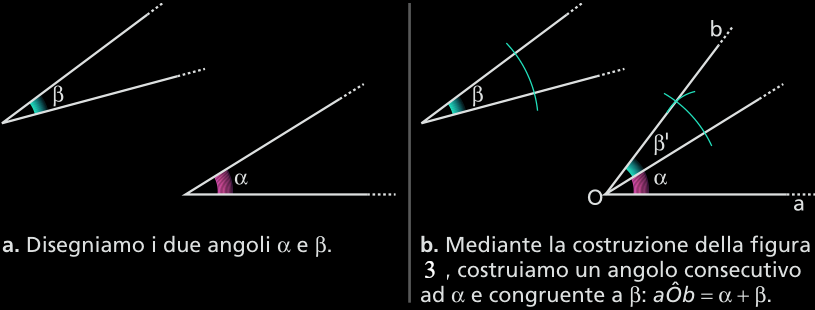

Le operazioni con i segmenti e con gli angoli
Il confronto di segmenti
Confrontare due segmenti significa stabilire se sono o non sono congruenti e, in quest’ultimo caso, quale dei due è maggiore.
Per effettuare il confronto basta sovrapporre i segmenti in modo che due loro estremi coincidano.
Se anche il secondo estremo coincide, i segmenti sono congruenti. Nell’esempio in figura a, scriviamo: AB ≅ OP.
Se il secondo estremo di uno risulta interno all’altro (figura b), i due segmenti non sono congruenti. Scriviamo:
AB < CD (AB minore di CD), CD > AB (CD maggiore di AB).
Costruzione per detrminare un punto equidistante da du punti dati Dato un segmento AB, cerchiamo un punto C equidistante da A e da B, avente come distanza quella del segmento stesso.
Nella costruzione della figura 1b usiamo il postulato della circonferenza. Nella figura 1c utilizziamo la definizione di circonferenza.
L’addizione fra segmenti
Definizione 1.3.1 (Somma di segmenti). Dati due segmenti adiacenti AB e BC, la loro somma è il segmento AC, che ha per estremi i loro estremi non comuni. □
Scriviamo: AB + BC = AC.
Per estendere questa definizione a due segmenti qualsiasi (figura 13), basta considerare due segmenti adiacenti che siano congruenti a quelli dati.
Puoi verificare con esempi che l’addizione fra segmenti gode delle proprietà commutativa e associativa. Inoltre, esiste l’elemento neutro, che è il segmento nullo.
Valgono inoltre le seguenti proprietà. Dati quattro segmenti AB, CD, EF, GH:
se AB ≅ CD ed EF ≅ GH, allora AB EF ≅ CD + GH, ossia somme di segmenti congruenti sono congruenti;
se AB > CD ed EF > GH, allora AB + EF > CD + GH, se AB < CD ed EF < GH, allora AB + EF < CD + GH, ossia somme di segmenti disuguali nello stesso senso sono disuguali nello stesso senso.
Multipli e sottomultipli di segmenti
Definizione 1.3.2 Si chiama multiplo di un segmento a, secondo il numero naturale n > 1, un segmento b congruente alla somma di n segmenti congruenti ad a. □
Scriviamo: b = na.
Se n = 1, possiamo estendere la definizione, considerando in questo caso, come multiplo di a, a stesso. Se n = 0, b è il segmento nullo.
Nella relazione precedente possiamo anche dire che a è sottomultiplo di b secondo il numero n (con n ≠ 0).
Scriviamo:
a = n/b oppure a = b/n
Inoltre, con m numero naturale, la scrittura c = mb/n (con n ≠ 0) significa: c = mb/n = m(b/n).
Valgono i seguenti postulati.
Postulato 1.3.3 (Postulato di Eudosso-Archimde per i segmenti) Dati due segmenti, che non siano congruenti o nulli, esiste sempre un segmento multiplo del minore che supera il maggiore.
Postulato 1.3.4 (Postulato di divisibilità dei segmenti) Dato un segmento, esiste il suo sottomultiplo secondo un qualsiasi numero naturale □.
Il punto medio di un segmento
Definizione 1.3.5 (Punto medio di un segmento) Il punto medio di un segmento è quel suo punto che lo divide in due segmenti congruenti. □
Postulato 1.3.6 (Unicità del punto medio) Esiste sempre il punto medio di un segmento ed è unico.
Questo è un primo esempio di costruzione con riga e compasso. La riga non è graduata e quindi non permette di misurare le lunghezze.
A questa costruzione non possiamo in questo momento dare una giustificazione completa. erché congiungendo i punti C e D otteniamo proprio il punto medio di AB? Vedremo che ciò è collegato alle proprietà del parallelogramma e del rombo.
La sottrazione fra segmenti
Definizione 1.3.6 (Differenza di segmenti). Dati i segmenti AB e AC (con AC > AB o AC ≅ AB), la differenza fra AC e AB è il segmento che, addizionato ad AB, dà come somma AC. □
Scriviamo: AC − AB = BC.
Dati quattro segmenti AB, CD, EF, GH, vale la seguente proprietà:
se AB ≅ CD ed EF ≅ GH (con AB > EF), allora AB − EF ≅ CD − GH, ossia differenze di segmenti ordinatamente congruenti sono congruenti.
Il confronto di angoli
Confrontare due angoli significa stabilire se sono o non sono congruenti e, in quest’ultimo caso, verificare quale dei due è maggiore.
Per effettuare il confronto basta sovrapporre un angolo all’altro, in modo che coincidano i due vertici e un lato.
Se anche il secondo lato risulta sovrapposto, come nella figura a, i due angoli sono congruenti. Scriviamo:
α ≅ β
Se il secondo lato di un angolo risulta interno all’altro, come nella figura b, i due angoli non sono congruenti. Scriviamo:
α < β (α minore di β) oppure β > α (β maggiore di α)
se α ≅ β e γ ≅ δ allora α + γ ≅ β + δ, ossia somme di angoli con gruenti sono congruenti;
se α > β e γ > δ allora α + γ > β + δ, se α < β e γ < δ allora α + γ < β + δ, ossia somme di angoli disuguali nello stesso senso sono disuguali nello stesso senso.
metà di un angolo piatto è un angolo retto;
minore di un angolo retto è un angolo acuto;
maggiore di un angolo retto e minore di un angolo piatto è ottuso.
Oltre al postulato della circonferenza, nella figura 16 utilizziamo il postulato del passaggio di una retta per due punti. Esso garantisce la possibilità di tracciare OD. Tuttavia, come possiamo essere sicuri che l’angolo costruito è congruente a quello dato? otremo rispondere a questa domanda solo dopo aver esaminato il terzo criterio di congruenza dei triangoli.
L’ampiezza degli angoli
La relazione di congruenza fra angoli fa sì che si possa ripartire l’insieme di tutti gli angoli del piano in classi di angoli congruenti fra loro. La caratteristica comune agli angoli appartenenti a una stessa classe si chiama ampiezza. Ogni classe, costituita da angoli congruenti, individua una e una sola ampiezza. In altre parole, due angoli congruenti hanno la stessa ampiezza.
L’addizione fra angoli
Definizione 1.3.7 (Somma di angolo). Dati due angoli consecutivi aV̂b e bV̂c, la loro somma è l'angolo aV̂c, che ha per lati i loro lati non comuni. □
Scriviamo: aV̂b + bV̂c = aV̂c.
Dati quattro angoli α, β, γ, δ, per l’addizione valgono le seguenti proprietà:
Multipli e sottomultipli di angoli
Si chiama multiplo di un angolo α, secondo il numero naturale n > 1, un angolo β che sia la somma di n angoli congruenti ad α.
Scriviamo: β = nα.
Se n = 1, possiamo estendere la definizione, considerando in questo caso, come multiplo di α, α stesso. Se n = 0, è l’angolo nullo.
Nella relazione precedente possiamo anche dire che è sottomultiplo di secondo il numero n (con n ≠ 0).
Scriviamo: α = β/n oppure α = β/n.
Inoltre, con m numero naturale, la scrittura γ = βm/n (con n ≠ 0) significa: γ = mβ/n = m(β/n).
Valgono i seguenti postulati.
Postulato 1.3.7 (di Eudosso-Archimede per gli angoli) Dati due angoli, che non siano congruenti o nulli, esiste sempre un angolo multiplo del minore che supera il maggiore.
Postulato 1.3.8 (di divisibilità degli angoli) Dato un angolo, esiste il suo sottomultiplo secondo un qualsiasi numero naturale.
Definizione 1.3.9. La bisettrice di un angolo è la semiretta uscente dal vertice che divide l'angolo in due angoli congruenti. □
Postulato 1.3.10 (Unicità della bisettrice). Per un qualsiasi angolo esiste ed è unica la bisettrice.
Osservazione. Non tutte le costruzioni geometriche sono possibili usando solamente riga e compasso. Per esempio, non è possibile dividere un angolo in tre angoli congruenti con questi due soli strumenti.
La sottrazione fra angoli
Definizione 1.3.11 (Differenza di angoli). Dati gli angoli α e β (con α > β o α ≅ β), la differenza fra α e β è l’angolo che, addizionato a β, dà come somma α.
Scriviamo: α − β = γ.
Dati quattro angoli α, β, γ, δ vale la seguente proprietà:
se α ≅ β e γ ≅ δ (con α > γ), allora α − γ ≅ β − δ, ossia differenze di angoli ordinatamente congruenti sono congruenti.
Angoli retti, acuti, ottusi
Definizione 1.3.12 (Angolo retto, acuto, ottuso). Ogni angolo:
Indicheremo l’angolo retto con P̂/2, o anche con R̂.
Poiché tutti gli angoli piatti sono congruenti, anche tutti gli angoli retti sono congruenti fra loro.
Inoltre, possiamo vedere l’angolo giro come il doppio di un angolo piatto e indicarlo quindi con 2P̂.
Due angoli sono supplementari se la loro somma è un angolo piatto.
Due angoli sono complementari se la loro somma è un angolo retto.
Due angoli sono esplementari se la loro somma è un angolo giro.
Angoli complementari di uno stesso angolo
Teorema 1.3.13 Se due angoli sono complementari di uno stesso angolo, o di angoli congruenti, allora sono congruenti.
Ipotesi: 1. α + γ ≅ R̂ 2. β + γ ≅ R̂
Tesi. α ≅ β
Dim. Per l'ipotesi 1: α + γ ≅ R̂, da cui α ≅ γ − R̂.
Per l'ipotesi 2: β + γ ≅ R̂, da cui β ≅ R̂ − γ.
Poiché tutti gli angoli retti sono congruenti fra loro e differenze di angoli congruenti sono congruenti, si deduce che α ≅ β. □
Gli angoli opposti al vertice
Definizione 1.3.14 (Angoli opposti al vertice) Due angoli si dicono opposti al vertice se hanno in comune il vertice e i lati di un angolo sono i prolungamenti dei lati dell’altro. □
Definizione 1.3.15 (Teorema degli angoli opposti al vertice) Se due angoli sono opposti al vertice, allora sono congruenti.
Ipotesi α e β opposti al vertice.
Tesi. α ≅ β
Dim.
α + γ ≅ P̂ poiché adiacenti, quindi α ≅ P̂ − γ;
β + γ ≅ P̂ poiché adiacenti, quindi β ≅ P̂ − γ;
Poiché tutti gli angoli piatti sono congruenti fra loro e differenze di angoli congruenti sono congruenti, si deduce che α ≅ β. □
Nel dimostrare il teorema precedente abbiamo anche dimostrato che angoli supplementari dello stesso angolo o di angoli congruenti,, sono congruenti, utilizzando uno schema analogo a quello del teorema degli angoli complementari di uno stesso angolo o di angoli congruenti.